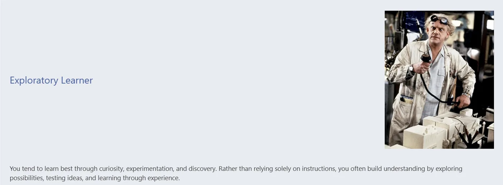
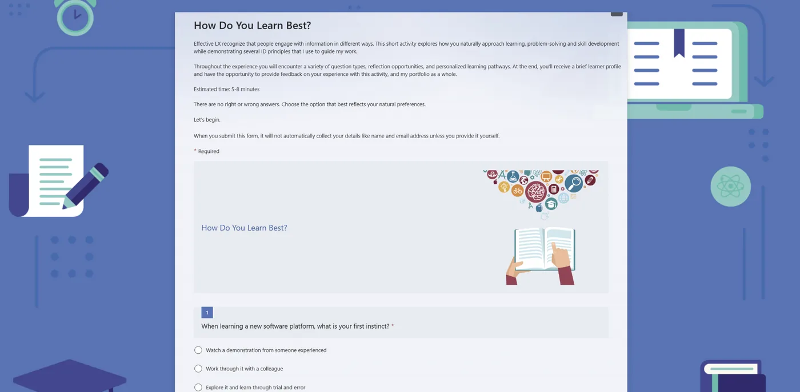
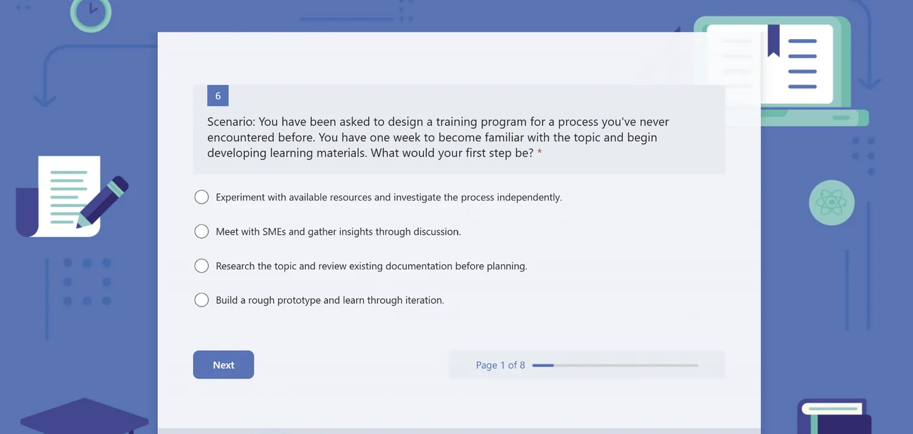
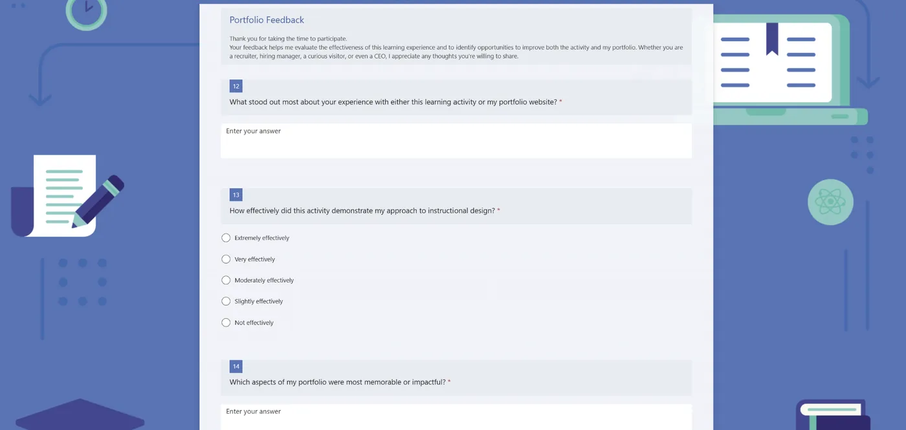

Case Study
Using personalization and curiosity to increase engagement with portfolio content while collecting feedback for continuous improvement.

Learning Challenge
Traditional portfolios often rely on passive browsing. In a competitive job market, I wanted to create an experience that would capture attention, encourage participation, demonstrate instructional design principles, and provide actionable feedback for improvement.
Solution
I designed an interactive learner-profile activity that used scenario-based questions, personalized outcomes, guided reflection, and feedback collection. The experience invited visitors to engage with learning design rather than simply read about it.
Design decisions
The activity begins with self-discovery, giving users a personally relevant reason to participate.
Participants connect their profile to prior learning experiences, turning the activity into a reflective learning moment.
Feedback and analytics were built into the experience to support ongoing UX improvements.
Artifacts
Click any artifact to enlarge it.



Results & impact
Reflection
Future iterations should reduce friction in the feedback process through faster rating scales, shorter prompts, and clearer calls to action. The strongest lesson from this project was that engagement and evaluation should be designed together.